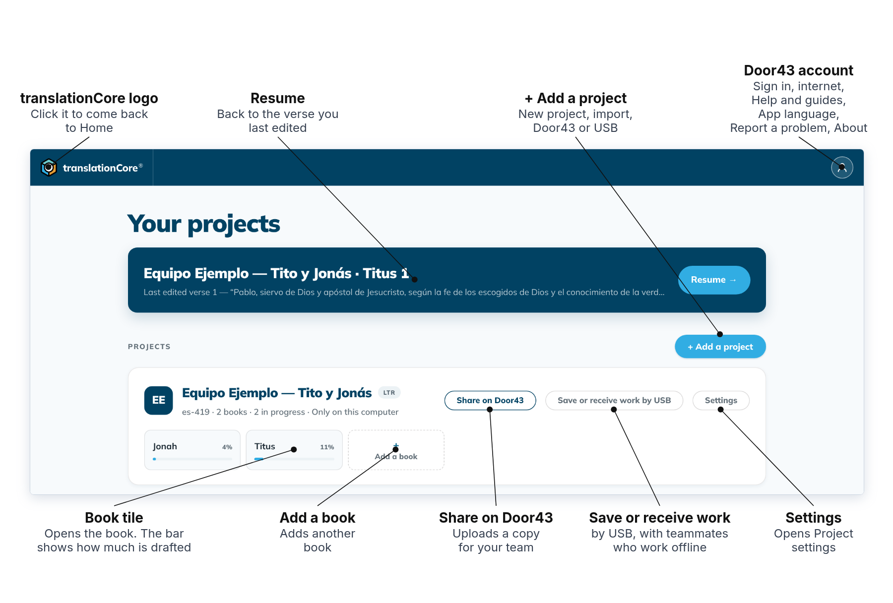
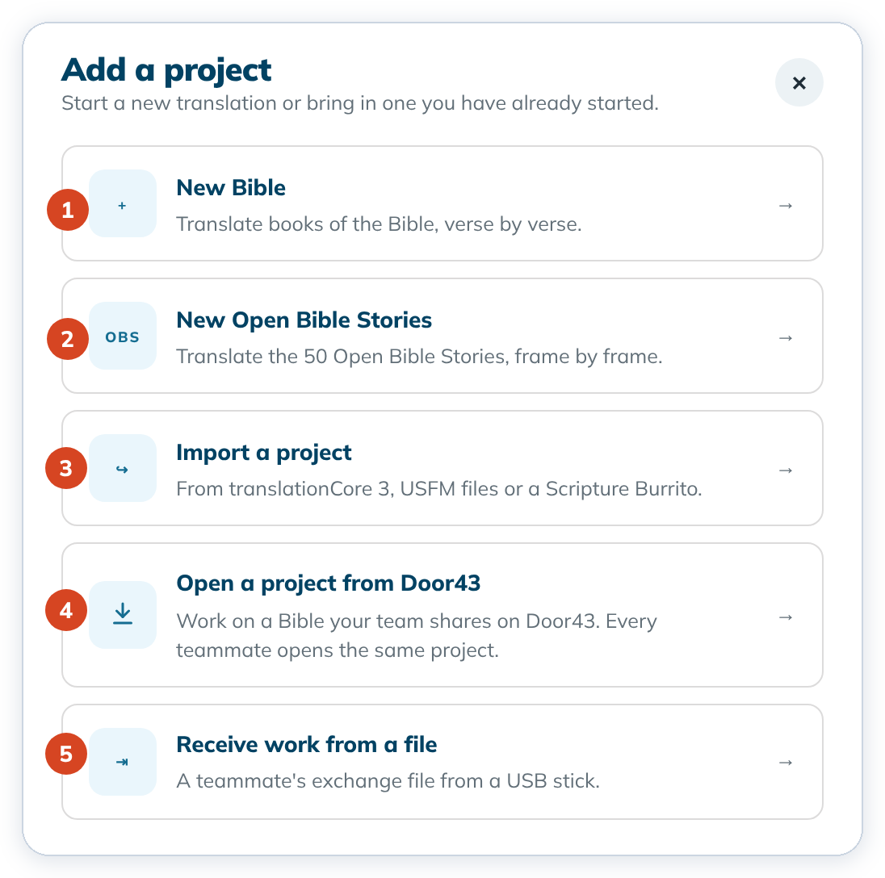

The Home screen
Home lists your projects. From here you open a book, go back to where you stopped, or add a project.


Open a book
- Click a book tile on a project card. A book you have not opened before starts in Understand. A book you have worked in opens where you left it.
- To come back to Home, click the translationCore logo at the top left.
To go straight back to the verse you last edited, click the blue banner or Resume →. See Resume where you left off.
The project you used last is always at the top of the list. The line under a project's name shows its language code, how many books it has, and whether it is only on this computer or shared on Door43.
Add a project
Click + Add a project, then choose one of the five cards.


- New Bible starts a new Bible translation. See Create a Bible project.
- New Open Bible Stories starts the 50 stories. See Start an Open Bible Stories project.
- Import a project brings in a translationCore 3 project. See Import a translationCore 3 project. To start from USFM files or a Scripture Burrito, choose New Bible.
- Open a project from Door43 opens a Bible your team shares on Door43. See Working as a team on several computers.
- Receive work from a file opens a teammate's exchange file from a USB stick.
To close the dialog without choosing, press Esc or click ✕.
Change a project
- Settings on the card opens Project settings: the checking language, text direction and script font. See Project settings.
- Add a book adds another book to the project.
- Share on Door43 uploads a copy of the project to Door43. See Share to Door43.
- Save or receive work by USB saves your work to a file, or reads a teammate's, for teams that work without the internet.
The account menu
Click the round person icon at the top right. The menu is the same on Home and inside a project.

- Sign in to Door43 so you can share projects.
- Use the internet turns the internet on or off for translationCore. While it is off, a step that needs the internet asks first.
- Help and guides opens the offline help that ships with the app. You can browse and search with no internet.
- App language changes the language of the menus and buttons. See Change the app language.
- Report a problem opens a form that sends a message to the unfoldingWord help desk.
- About translationCore shows the version, the copyright and trademark line, the license and the third-party licenses.